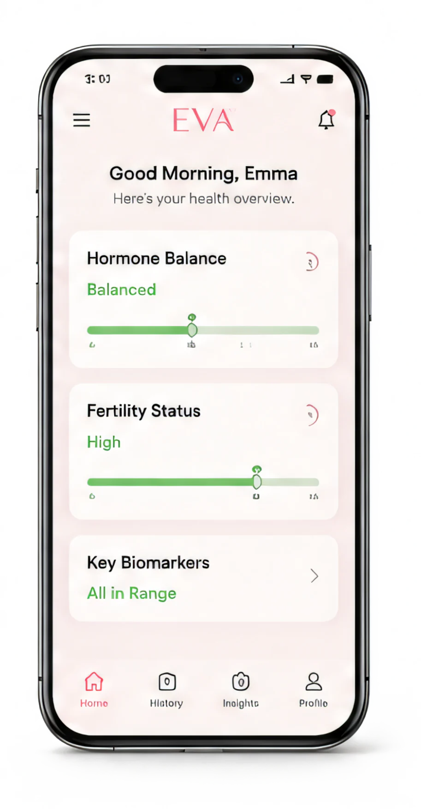
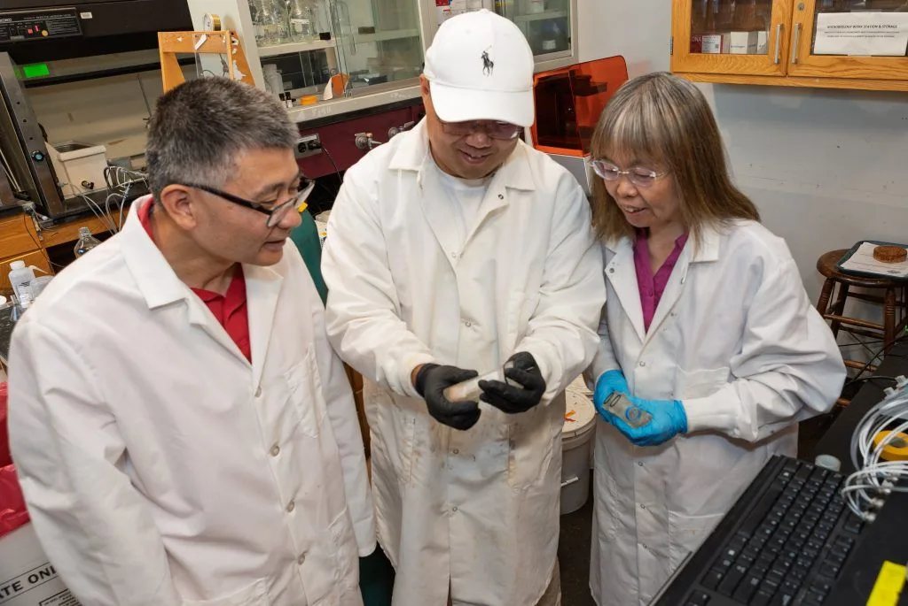

Electrochemical interface
Sensing surfaces and materials are considered in relation to the fluid environment they meet.
Interface layer Electrode · materials · fluid
Electrochemical intelligenceComplex fluids
WE-Sensing develops advanced electrochemical sensing systems that reveal how complex water environments change over time.
An integrated path from chemistry to context.
The monitoring gap
Complex water environments change continuously. A sample captures one moment; a sensing system is designed to follow the conditions around it over time.
Bring the sensing interface closer to the fluid environment and the operating context around it.
Build a time-resolved view of how signals evolve between conventional sampling events.
Stabilize, contextualize, and present signals so technical teams can decide what to investigate next.
The WE-Sensing system
A coordinated sensing workflow connects the electrochemical interface with acquisition, interpretation, and a usable operational view.
The local environment interacts with a purpose-built electrochemical interface.
Electrode responses are acquired through integrated electronics and channel control.
Signal behavior is stabilized, organized, and interpreted in context.
Technical teams receive a clearer view of change and where attention may be needed.
Integrated technology
Performance in complex fluids depends on more than one component. WE-Sensing develops the interface, electronics, signal layer, and application context as a connected system.
Sensing surfaces and materials are considered in relation to the fluid environment they meet.
Interface layer Electrode · materials · fluid
Integrated circuitry captures and organizes responses across one or more sensing channels.
Electronics layer Acquisition · control · transfer
Processing methods help distinguish stable patterns, shifts, and conditions that merit review.
Signal layer Stabilization · interpretation
Information is structured for the people responsible for experiments, operations, or partnerships.
Application layer Context · review · action
Water applications
WE-Sensing is developing adaptable monitoring approaches for research and industrial settings where water chemistry and process context matter together.
Water & wastewater
Observe evolving fluid conditions within treatment and process workflows.
Research
Connect electrochemical signals with controlled studies and field-relevant questions.
Partnerships
Explore sensing interfaces, electronics, and data workflows around a defined measurement need.
EVA / A WE-Sensing venture
A familiar pad. A new layer of health insight.
EVA is a smart menstrual sensing pad under development, informed by shared expertise in electrochemical sensing, electronics, signal processing, and data interpretation.
Explore EVA

EVA is currently under development and is not available for clinical diagnosis or treatment decisions.
Company
WE-Sensing brings together electrochemical sensing, environmental systems, product development, and commercialization perspectives.

WE-Sensing’s co-founders are supported by product contributors, business mentors, and a scientific advisory board.
Meet the complete teamStart a conversation
Share the fluid environment, measurement question, or collaboration you have in mind. Please do not include personal medical information.
Select an inquiry type
Describe the context
WE-Sensing will review fit and next steps